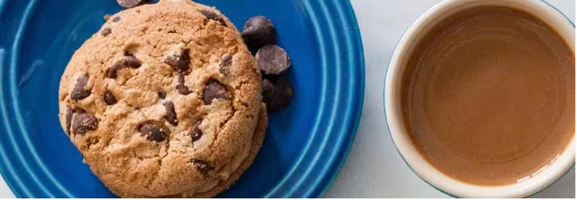

On Board Facilities

(1) How do I book snacks for my flight online and what are the charges?
Complimentary snacks are not served on-board our flights. However, you may pre-book your snack while making
your reservation or add it later online or by calling our call center. If you have not pre-booked your
snack, you can also purchase food items on-board basis availability.
Snack options:
-
Flights under 30 minutes flying time: Only our favorite Cookie Tins, Nut Cases and water bottles will be available for purchase. No other Food & Beverage will be on sale on-board such flights.
-
Flights under 60 minutes flying time: Everything on the menu except hot food and hot beverages will be on sale basis availablity.
-
If any of the services are booked through Dream's Flights call centre, an additional amount of 10% (ten percent) of the applicable charges will apply.
(2) Is alcohol offered on IndiGo flights?
- Alcohol is only served on International flights and can be purchased on-board. However, consumption of liquor bought from Duty Free shops is prohibited on-board.
- Please not: Serving of or consumption of alcohol is strictly prohibited on Domestic flights.
(3) Is smoking allowed on- board IndiGo flights?
- Smoking is strictly prohibited on any Dream Flights aircraft
(4) Can I carry water and food on-board?
- Dream Flights provides water cups free of charge on all its flights. Water bottles will be available in flight on sale.
- Dream Flights allows passengers to bring food items on-board. Allowed food items include cold snacks, non-alcoholic drinks, snack bars and biscuits.
- Messy, oily or strong smelling food items are not allowed on-board